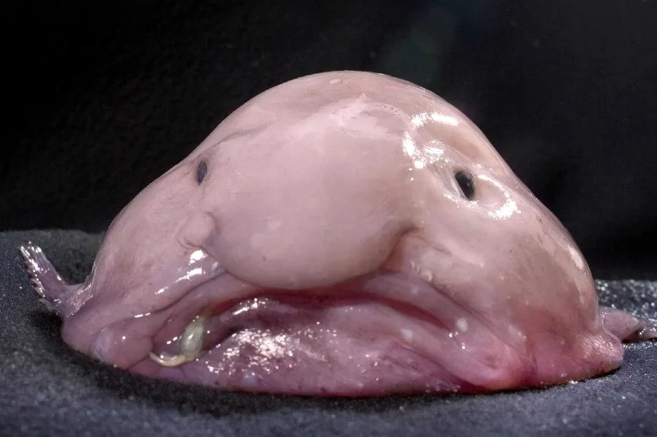
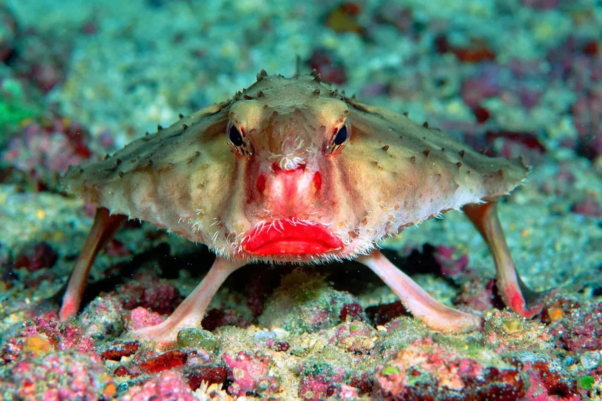
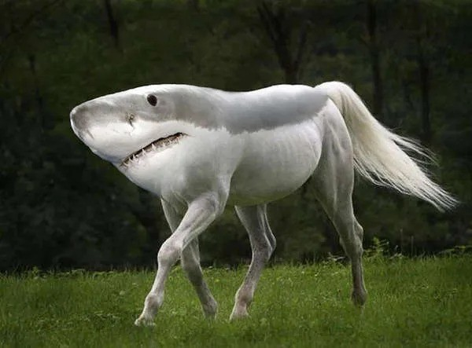

Our Top Strangest Animals

Lost its way to the audition for Ice Age 5

The living embodiment of Monday morning, perpetually surprised it even made it out of bed

rocking ocean-floor glam with lips so fire, they make grandmas clutch their pearls.

The one creature who could outrun a cheetah and outswim a dolphin... probably.